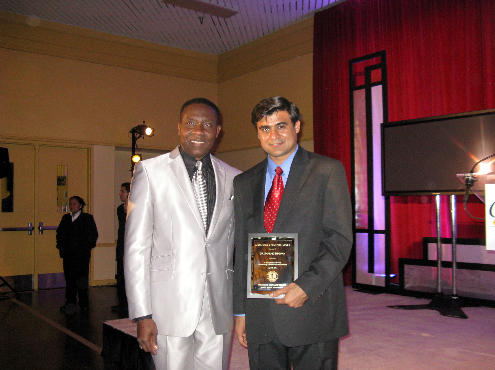

Associate
Professor
Department of Computer Science
Bowie State University
Bowie, MD 20715
My research interests include Modeling and Simulation of Emergency Response, Evacuation, Intelligent Systems, Agent-based Systems, Virtual Reality, Gaming, Artificial Intelligence, Software Engineering, Human Computer Interaction, Robotics, Fuzzy Logic, Data Science and Data Visulaization. I specializes in investigating modeling strategies to simulate human egress behavior during emergency evacuation for multi-agent systems (MAS) and multi-user virtual reality (MUVR) environments. I am the Director of the Virtual Reality Laboratory at the Bowie State University. The current projects in the VR Laboratory focus on emergency response stratergies and evacuation drills for Multi‐User Virtual Reality (MUVR) evacuation (Examples: subway evacuation, airplane evacuation, bus evacuation, VR city evacuation, and university campus evacuation) environments.
I was born and brought up at Indian Institute of Technology Roorkee (Prev.University of Roorkee) where my Dad was Professor, Department of Mathematics. He has been in academics for more than 60 years and has completed more than 300 research papers, which are published in national and international journals. I have worked as CAD Engineer Intern at EMAG Technologies, Inc. in Ann Arbor, MI between Aug 2001 to Nov 2001 where I was involved in the development of Graphic User Interface in MFC/ Visual C++. I like dancing, sketching,beautiful music (REAL music--not crap), people-watching horror movies, the smell of autumn, the scent of perfume, international penpals. Traveling and cars are my other passions.
{kind=link}
{kind=link}
With University System of Maryland (USM) Chancellor Robert L. Caret.
2018 USM Board of Regents"Faculty Award" for Excellence in Scholarship and Research in April 2018.
{kind=link}
Talk at STIx, (Science Technology & Innovation Exchange), event organized by DOD Basic Research Office at Arlington, VA, Thursday August 24, 2017.

Program Chair for ISCA SEDE Conference 2017
{kind=link}
Outstanding Researcher of the Year Award, Year 2013
{kind=link}
Outstanding Faculty Award, Year 2012

Outstanding Researcher of the Year Award, Year 2011
{kind=link}
Outstanding Publication Award, Year 2010
{kind=link}
Outstanding Young Faculty Award, Year 2009
Talk at STIx, (Science Technology & Innovation Exchange), event organized by DOD Basic Research Office at Arlington, VA, Thursday August 24, 2017.

Outstanding Graduate/ Professional Student Leadership Award, Year 2005-2006
{kind=link}
{kind=link}
Service Award, April 2018
Retirement Remarks for Dr. Srivastava (Prev. Chair, CS Dept.), April 2018